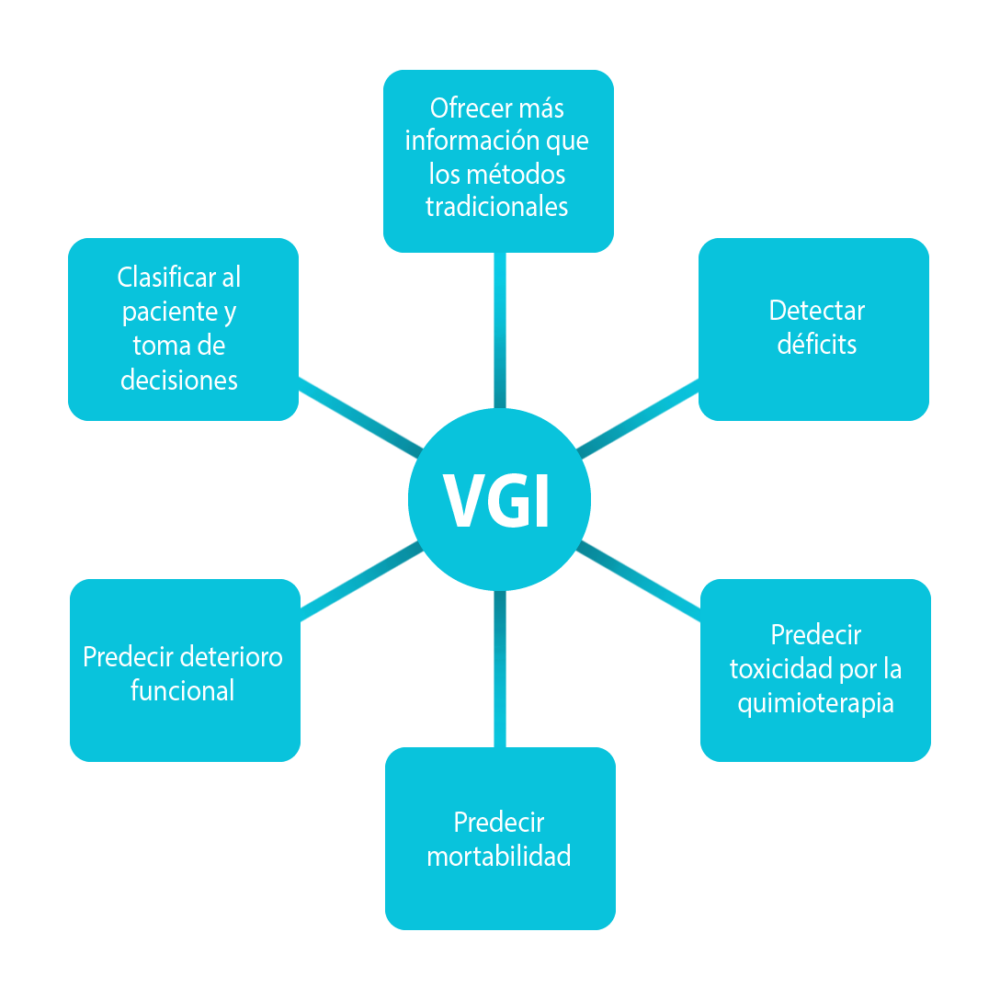

Valoración del anciano con cáncer

Valoración Geriátrica Integral
Definición
La Valoración Geriátrica Integral (VGI) representa la principal herramienta de trabajo en el ámbito de la Geriatría. Se trata de una forma de valoración multidimensional y multidisciplinar del paciente de edad avanzada, con la que se pretende elaborar un plan integrado y coordinado, tanto de tratamiento, como de seguimiento a largo plazo.
El proceso de la VGI comprende 5 pasos consecutivos: identificar quién puede beneficiarse de la VGI, llevar a cabo la VGI, desarrollar un plan de cuidados basado en los datos de la misma, y proveer un seguimiento periódico en el que, en función de los cambios en la VGI, se ajuste de nuevo el plan de cuidados.
En ausencia de una medida sencilla del envejecimiento o de marcadores precisos de este fenómeno, las herramientas clínicas siguen siendo el “gold standard” para evaluar al anciano oncológico, y para definir de forma precisa su situación funcional y fisiológica. En este sentido, la VGI identifica problemas del individuo que pueden interferir con el tratamiento oncológico, y debe incluir la elaboración de un plan de cuidados para el manejo de los déficits detectados. Dicho plan de cuidados mejora, entre otros aspectos, la evolución de paciente, su calidad de vida y su estado funcional. Por este motivo, tanto la SIOG, como la National Comprehensive Cancer Network (NCCN), recomiendan que se lleve a cabo una VGI todos los ancianos oncológicos.
Los problemas detectados mediante la VGI en individuos de edad avanzada con cáncer, tales como el deterioro funcional o el trastorno depresivo, en ocasiones, se potencian por la presencia del propio tumor, dato a tener en cuenta de cara a desarrollar estrategias para optimizar la salud de los ancianos con cáncer (por ejemplo, la intervención a nivel funcional o sobre el estado de ánimo).
Componentes de la VGI y su valor en ancianos tratados con quimioterapia
La VGI incluye, al menos, información acerca del estado funcional (actividades básicas de la vida diaria (ABVD), actividades instrumentales de la vida diaria (AIVD), situación basal o performance status (PS)), de la comorbilidad, de la medicación del paciente, de su situación cognitiva, del estado de ánimo y de los síndromes geriátricos.
El estado cognitivo impacta en la capacidad de decisión del paciente, en la adherencia al tratamiento, en la comunicación entre el paciente y los especialistas de la salud, y se relaciona con la toxicidad del tratamiento. Además, el deterioro cognitivo significativo se asocia con una peor supervivencia global. Hay distintas formas de evaluar el estado cognitivo del anciano oncológico, entre las que se encuentran el cuestionario de Pfeiffer, el cuestionario Mini Mental State Examination (MMSE) o el cuestionario Mini-cog.
El estado de ánimo también puede impactar en la adherencia al tratamiento, en la calidad de vida del paciente, y en la capacidad del individuo para emitir el consentimiento informado. Los ancianos oncológicos con depresión suelen recibir menos tratamiento antitumoral y tienen una peor supervivencia global. En un estudio de ancianos oncológicos, el 41% presentaba distrés psicológico, y el deterioro en la función física se asociaba de forma significativa a dicho distrés. Uno de los cuestionarios más empleado para evaluar el estado de ánimo de estos pacientes es la Geriatric Depression Scale (GDS). Aunque la prevalencia de depresión en ancianos oncológicos es muy variable, en algunas series, alcanza el 30%, y la ansiedad, aunque es menos habitual que en pacientes más jóvenes, está presente hasta en el 20% de los casos.
El estado nutricional puede impactar en la supervivencia asociada al cáncer, aumentar el riesgo de complicaciones del tratamiento (infección de la herida quirúrgica, delirio, úlceras por presión), influir sobre el metabolismo de los fármacos, y en el estado funcional y el riesgo de caídas. La malnutrición es uno de los parámetros que con más frecuencia conduce a la modificación del tratamiento antitumoral por parte del oncólogo. Las publicaciones evalúan el estado nutricional en el anciano oncológico mediante la pérdida de peso y de apetito, mediante el nivel de albúmina sérica o a través del cuestionario Mini Nutritional Assessment (MNA).
La comorbilidad puede impactar en la supervivencia del paciente y en la finalidad del tratamiento, aumentar el riesgo de eventos adversos o interacciones farmacológicas, impactar en la capacidad del paciente para adherirse a los tratamientos antitumorales, aumentar las complicaciones asociadas al tratamiento, y empeorar la supervivencia en ancianos oncológicos, en especial, en aquellos con enfermedad localizada y/o potencialmente curable. El índice de comorbilidad de Charlson y el cuestionario Cumulative Illness Rating Scale-Geriatric (CIRS-G) son las escalas más empleadas para evaluar la comorbilidad en ancianos oncológicos.
El estado funcional puede impactar en la capacidad del paciente para adherirse a los tratamientos pautados, incrementa la necesidad de apoyo del paciente durante el tratamiento antitumoral, y aumenta el riesgo de caídas, así como el riesgo de toxicidad por el tratamiento. Tradicionalmente, los oncólogos han evaluado la situación funcional de sus pacientes mediante escalas subjetivas, tales como la escala ECOG (Eastern Cooperative Oncology Group) o el índice de Karnofsky (IK). Sin embargo, en ancianos, los cuestionarios más empleados para evaluar dicho estado funcional son la escala de Barthel para las ABVD y la escala de Lawton-Brody para las AIVD, y los cuestionarios de Older American Resources and Services (OARS). Dichos cuestionarios proporcionan más información que la situación basal medida mediante ECOG-PS o mediante IK. Junto a las ABVD y las AIVD, otras medidas objetivas de función física, tales como la velocidad de la marcha, la fuerza de prensión manual, el equilibrio o la fuerza de extremidades inferiores, se asocian con la mortalidad y con otros eventos adversos en individuos de edad avanzada.
La situación social puede influir en la adherencia al tratamiento y en el estado del cuidador. Un estudio francés encontró que un alto porcentaje de ancianos oncológicos viven solos, y probablemente, esto sea extensible al resto de países. A nivel nacional, el cuestionario más empleado es la escala socio-familiar de Gijón. Algunos estudios internacionales han incluido la autopercepción del paciente acerca del soporte que tiene.
Por otro lado, la polifarmacia aumenta el riesgo de interacciones farmacológicas y de eventos adversos, incrementa el riesgo de hospitalización y de toxicidad al tratamiento y puede influir en la adherencia al mismo. Su determinación se lleva a cabo mediante la revisión de los fármacos que toma el paciente.
Otro aspecto de la VGI lo representan los síndromes geriátricos. En este sentido, la función sensorial (audición y visión) impacta en la comunicación entre el paciente y el especialista, puede influir en la adherencia al tratamiento y en la elección del mismo y en su toxicidad. El riesgo de caídas impacta en la calidad de vida del individuo y en la capacidad del mismo para adherirse al tratamiento, y es un factor de riesgo de toxicidad a la quimioterapia. Puede determinarse mediante el Short Physical Performance Battery (SPPB) o mediante pregunta directa al paciente.
No existe un modelo único de VGI en el ámbito de la Oncogeriatría, de igual modo que no existe en la Geriatría. A nivel nacional, un grupo de expertos en Oncogeriatría de la Sociedad Española de Oncología Médica (SEOM), ha llegado a un consenso, basado en un procedimiento tipo Delphi, acerca de las dimensiones y de las escalas de la VGI que se podrían emplear en los ancianos oncológicos de nuestro medio.
Modelo de VGI propuesto por un grupo de expertos en Oncogeriatría de la SEOM
Dominio |
Escala |
|
FUNCIONAL |
ABVD AIVD Situación funcional |
Escala de Barthel Índice de Lawton-Brody Velocidad de la marcha |
NUTRICIONAL |
MNA |
|
COGNITIVA |
Cuestionario de Pfeiffer |
|
ESTADO ANÍMICO |
Cuestionario de Yesevage |
|
SOCIO-FAMILIAR |
Escala socio-familiar de Gijón |
|
COMORBILIDAD |
Índice de Charlson |
|
CONSUMO DE FÁRMACOS |
Número de fármacos |
|
SÍNDROMES GERIÁTRICOS |
Insomnio Agudeza visual y auditiva Incontinencia fecal y urinaria Úlcera por presión Maltrato |
|
Beneficios de la VGI en ancianos oncológicos
La evidencia disponible acerca de la VGI en ancianos oncológicos es muy amplia, y se dispone de información acerca de poblaciones muy variadas.
Ya se han publicado revisiones acerca del uso de VGI de forma específica en determinadas neoplasias, tales como el cáncer de próstata o el cáncer de pulmón. Si bien, según los datos disponibles, en el caso de los ancianos con cáncer de pulmón, se ha hecho un uso adecuado de la VGI (orienta las decisiones terapéuticas y algunas de sus dimensiones, tales como la alteración en la capacidad física y la malnutrición, permiten predecir la mortalidad en este grupo poblacional), en el caso del cáncer de próstata, no se ha hecho una aplicación práctica de la VGI, sino que la mayoría de los estudios se han limitado a hacer una descripción de los déficits detectados en los distintos dominios de VGI.
Los beneficios de la VGI en el anciano oncológico son numerosos, y se enumerarán a continuación algunos de ellos.
Beneficios de la VGI en el anciano oncológico
Detección de déficits e intervención sobre los mismos
Por un lado, la VGI permite detectar déficits en el anciano oncológico que, de otra manera, habrían pasado desapercibidos. La detección de dichos déficits, en parte, guiará la toma de decisiones en este grupo poblacional, ya que la intervención sobre los mismos aumenta la posibilidad de que el paciente complete el tratamiento planificado inicialmente, y disminuye la necesidad de tener que modificar el planteamiento terapéutico inicial. Según datos derivados de distintas revisiones sistemáticas, los hallazgos de la VGI conducen a un cambio en el plan de tratamiento inicialmente planificado para el paciente en el 30-39% de los casos. Al 5-23% de los pacientes se les podría ofrecer el mejor tratamiento de soporte frente a la quimioterapia en función a los resultados de la VGI.
Kenis et al llevaron a cabo el mayor ensayo clínico no randomizado relacionado con las maniobras de intervención publicado hasta el momento en ancianos oncológicos. Dicho ensayo mostró que la VGI evidenció la presencia de déficits no detectados previamente en el 52% del total de 1115 pacientes mayores de 70 años de edad con diagnóstico de cáncer. Algunos de dichos déficits correspondían a la esfera nutricional, al deterioro cognitivo y a la depresión. Se llevaron a cabo maniobras de intervención en el 77% de los pacientes.
En el estudio de Ǿrum et al, la intervención sobre los déficits detectados en la VGI se asociaba a una menor mortalidad precoz (mortalidad a los 90 días) en ancianos oncológicos frente a aquellos en los que no se llevaba a cabo ningún tipo de intervención.
Como la población anciana es la más heterogénea de entre todos los grupos de edad, en cuanto a funcionalidad y comorbilidad, las maniobras de intervención deberán llevarse a cabo de forma individualizada, sin que pueda existir un modelo unánime ni único que se pueda ajustar a toda la población. La frecuencia con la que debe llevarse a cabo la VGI para valorar si es preciso o no modificar el plan de cuidados y de intervenciones inicialmente establecido es variable, pero se precisa llevar a cabo un seguimiento en el que se repita la VGI, con el fin de identificar problemas y déficits de reciente aparición sobre los que sea preciso intervenir de nuevo, o que impliquen un cambio en el planteamiento inicial.
Recientemente, un grupo de expertos de la SIOG han publicado unas recomendaciones actualizadas acerca de la intervención en ancianos oncológicos, y se están llevando a cabo estudios para evaluar su papel en el tratamiento de este grupo poblacional, tales como el estudio PREPARE.
Puts et al van a iniciar un ensayo fase III, el estudio 5C, en el que pretenden hacer un análisis de coste-eficacia de la VGI, de su implementación y de las maniobras de intervención a realizar en pacientes con déficits.
Predicción de toxicidad a la quimioterapia
Este apartado se desarrollará de forma más somera en el siguiente tema de este bloque de Oncogeriatría. No obstante, a modo de resumen, existen 2 modelos predictivos de toxicidad a la quimioterapia, que se basan, en parte, en datos obtenidos a partir de la VGI. Uno de dichos modelos fue elaborado por Hurria et al, en una serie de 500 pacientes ≥65 años de edad. En este modelo, una baja agudeza auditiva, la presencia de caídas en los últimos 6 meses, la incapacidad del individuo para tomar su propia medicación, la dificultad para caminar durante una manzana, y la presencia de problemas físicos y/o emocionales que dificulten su actividad social en el último mes, son las variables de la VGI que se asociaron de forma significativa a la aparición de toxicidad de la quimioterapia. Otro modelo fue el desarrollado por Extermann et al, el denominado modelo CRASH (Chemotherapy Risk Assessment Scale for High-Age Patients), desarrollado a partir de una serie de 518 pacientes oncológicos ≥70 años de edad. En este índice, los parámetros de la VGI con valor predictivo de toxicidad severa a la quimioterapia fueron la dependencia en AIVD, el estado cognitivo y la situación nutricional.
Ambos índices están validados, y proporcionan una información que puede ser útil en la toma de decisiones en relación a estos pacientes.
Predicción de mortalidad
La situación basal de los pacientes con cáncer suele evaluarse clínicamente mediante el “performance status” (PS), parámetro que se asocia de forma significativa con la supervivencia de estos pacientes. En el anciano oncológico, sin embargo, el PS tiene un valor predictivo menor, ya que distintas enfermedades crónicas pueden influir en dicho PS, pero no en la supervivencia. El estudio de Repetto et al mostró la capacidad de la VGI para detectar limitaciones en la capacidad funcional que no llegan a identificarse mediante el PS.
La VGI es predictora de mortalidad en el anciano oncológico, tanto en pacientes ingresados, como en pacientes ambulatorios. De forma similar, en el estudio de Ghosn et al, la VGI era predictora de supervivencia global, algo que no ocurría con el índice de Karnofsky ni con el Physical Performance Test (PPT).
Hay 3 autores que han elaborado modelos predictores de riesgo de mortalidad en ancianos oncológicos basados, en parte, en datos de la VGI. El interés de estos modelos radica en que representan herramientas muy interesantes de cara a la toma de decisiones en este grupo poblacional.
En el estudio de Bouylahssass et al, distintos elementos de la VGI se asociaban a mortalidad precoz en ancianos oncológicos con cáncer. En este estudio multicéntrico y prospectivo, se elaboró una escala mediante la cual, predecir el riesgo de mortalidad a los 100 días en pacientes oncológicos mayores de 70 años de edad. Los datos de la VGI que resultaron ser predictores independientes de mortalidad a los 100 días fueron la velocidad de la marcha < 0,8 m/seg, el estado nutricional evaluado mediante el cuestionario MNA, y la situación basal medida mediante PS. Otros factores predictores independientes fueron la presencia de metástasis, y el diagnóstico de cáncer distinto al cáncer de mama. El riesgo de mortalidad a los 100 días fue del 4% para puntuaciones entre 0-6, del 24% para puntuaciones entre 7-8, del 39% para puntuaciones de 9-10 y del 67% para puntuaciones de 11.
Por otro lado, Brunello et al crearon una modificación del índice MPI (Multidimensional Prognostic Index), denominado Onco-MPI para predecir mortalidad de forma específica en ancianos oncológicos. Utilizando una muestra de 658 pacientes oncológicos ≥70 años, los autores crearon un índice a partir de datos de la VGI, de las características demográficas del paciente y de información acerca del tumor, con el que predecir la mortalidad por cualquier causa en estos individuos. Una puntuación de 0-0,46 clasificaba al individuo en el grupo de bajo riesgo de mortalidad al año (2,1%); la puntuación 0,47-0,63 se asociaba a un riesgo intermedio (17,7%), y la puntuación de 0,64-1,0 correspondía a un riesgo alto de mortalidad (80,8%). El poder discriminatorio de dicho índice para predecir mortalidad al año es bueno (C-index de supervivencia, 0,87; intervalo de confianza (IC) 95%: 0,84-0,90). Las variables de la VGI integradas en dicho índice son el índice de masa corporal, las ABVD, las AIVD, el número de comorbilidades según el índice CIRS-G, la situación basal, medida mediante ECOG-PS, el estado cognitivo, determinado mediante el MMSE, el número de fármacos que consume el paciente, y la presencia o no de un cuidador.
Kanesvaran et al crearon un nomograma de predicción de mortalidad basado en elementos de la VGI en población asiática. Mediante un análisis retrospectivo de 249 pacientes ≥70 años de edad con diagnóstico de cáncer, los autores elaboraron un nomograma para predecir supervivencia global. Las variables significativas relacionadas con la VGI fueron el ECOG-PS, el síndrome depresivo y un alto riesgo de desnutrición. Otras variables, distintas a la VGI, incluidas en este modelo fueron la edad, los niveles anómalos de albúmina sérica y estados avanzados de la enfermedad tumoral.
Por otro lado, en la publicación de Soubeyran et al, la malnutrición y una mala movilidad se relacionaban con una menor supervivencia a los 6 meses.
VGI y nuevos tratamientos basados en dianas terapéuticas
Son muy escasos los estudios que analizan el papel de la VGI en las nuevas terapias. Así, Brunello et al publicaron un artículo de 68 pacientes ≥70 años con cáncer renal metastásico tratados con sunitinib. En esta serie, a la mitad de los pacientes (n=34) se les efectuó una VGI; tras una mediana de seguimiento de 27,1 meses, no se encontró una asociación significativa entre la presencia de fragilidad, detectada mediante la VGI, y la toxicidad severa o la supervivencia; tampoco se detectó ninguna asociación con la respuesta al fármaco.
Algo que es habitual en los escasos estudios que hay al respecto, es el bajo porcentaje de pacientes a los que se les aplica una VGI. Así, por ejemplo, en el estudio OCTOMUT, un análisis retrospectivo en 20 centros franceses, de las historias de ancianos ≥80 años de edad tratados con inhibidores de la tirosin-cinasa, se usó la VGI sólo en el 35,1% de los casos.
VGI en pacientes tratados con inmunoterapia
La evidencia científica existente al respecto es muy escasa. Sabatier et al, en un estudio limitado a pacientes con cáncer de pulmón no microcítico, no encontraron ninguna asociación entre el índice de comorbilidad de Charlson ni la polifarmacia con la toxicidad de nivolumab ni con la aparición de eventos adversos.
En un estudio retrospectivo y unicéntrico recientemente publicado, que incluía sólo 28 pacientes mayores de 65 años de edad con cualquier tipo de neoplasia, en los que se hubiera empleado inmunoterapia (50% había recibido pembrolizumab), sólo uno de los componentes de la VGI, las AIVD, se asoció de forma significativa con una duración más corta del tratamiento con inmunoterapia (asimismo, se observaba una asociación, aunque no significativa, entre la duración de la inmunoterapia, y la pérdida de peso del paciente y las ABVD). Se trataba de una muestra de pacientes en los que un alto porcentaje, el 75%, presentaba deterioro en, al menos, uno de los dominios de la VGI.